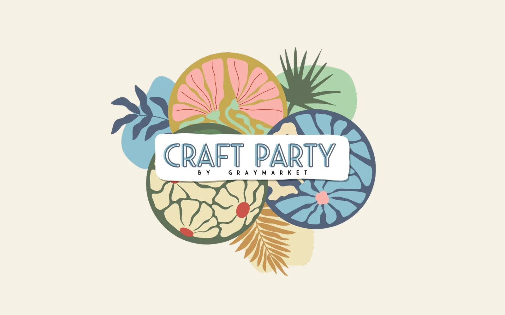

Zan Dean
Translating vision into working systems
I'm a systems-minded creative who works across business strategy, design, and operations. I take something inchoate, a founder's tangled pitch, a napkin drawing, a vibe nobody can quite put into words, give it a working form, then stay in the loop as the liaison between that vision and whoever has to build it.
In practice that spans four areas: business and operations analytics, marketing and communications, visual design, and system design. Most real projects pull from more than one.
What I Do
Four pillars, one throughline
The skill set sorts into four areas. Each links to the work that shows it in action.
Business & Operations Analytics
Figuring out what actually matters to a business, then tracking it.
- Identifying the data that's actually valuable, before building anything with it
- Dashboard and insight development, tailored to the business
- Operations analysis and business/process design
- AI tool stacking and ops + AI system stacks
- Backend business setup: LLC, EIN, DBA, wholesale, budgeting
Marketing & Communications
Research-led marketing across digital and print.
- SEO: on-site development, offline research, keyword strategy
- Blog and content writing
- Digital and print media, direct mail (USPS)
- Market and demographic research and segmentation
- PR connections and customer service
Visual Design
Brand, identity, and the look of everything.
- Brand and visual identity design
- Logo and character design
- Website visual design
- Environmental, merch, and print graphics
- Creative direction
System Design
The structures and builds that make it all run.
- Website architecture, CMS, and backend builds
- Workflow design and automation
- Operational systems, the structural counterpart to ops analysis
- Booking, CRM, and platform integration
- Liaison between developer/platform and client/brand
Learn More About Me
Structure meets creativity
My background blends business and marketing, design, and years in the wellness world. I earned my B.S. in Business and Marketing and found my footing at the intersection of creativity and structure, the space where visual storytelling supports strategy and strong systems bring ideas to life.
I care about work that feels good, functions smoothly, and holds up over time, for the business and the people behind it.
Selected Work
Flagship projects
A few projects that span multiple pillars. The full set lives in the portfolio.
Gardens of Eatin'
Full redesign and copywriting, brand elevation to editorial, developer brokering, and an ongoing campaign.
Black Koi Water Features
Customer service to marketing to a full ops and data infrastructure. The strongest scaled proof point.

FlagshipCraft Party
Ground-up business plan, market research, branding, and site design for a business concept.
Let's Connect
Building something with intention?
If you're looking for a systems-minded creative who can move between strategy, design, and execution, I'd love to hear about it.